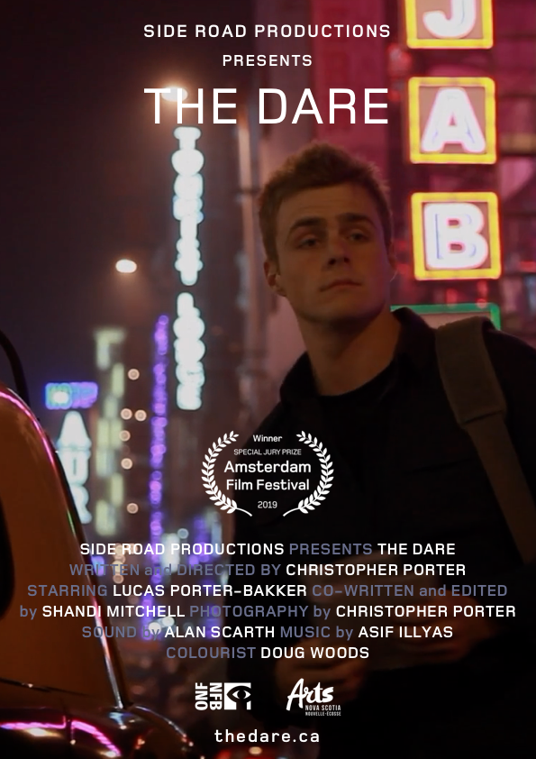

A son is challenged by his father to complete a solo trip through India. An off-the-beaten-road coming of age trip that's all about the journey.
8 minutes; 30 seconds

An experimental hybrid fiction of a real journey; road movie meets documentary. Shot in India on a Canon 5D. Using a stills camera as a video camera, we set up shots in the streets using the real world as our setting. Porter wanted to capture India’s beauty and surge of life. He was looking for the sensory experience of an outsider travelling through another land and responding visually to the intensity and movement of India. Porter has four children and on their eighteenth birthdays has taken them somewhere in the world to encounter themselves. These are challenging and off-the-beaten path journeys. Coming of age trips. His intention being to help them see beyond the comfort and privilege of their North American world. For each of them, these trips have been life changing experiences. The film is about him and them. It is an outsider film about a young man moving through a world that is not his. It is about him being stripped of his comfort zone, losing ego and confidence, until he becomes unafraid and can finally glimpse himself and those around him.